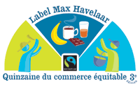

En ce début de mois de mai commence la quinzaine du commerce équitable. Le
commerce équitable est une forme de commerce vise à apporter plus d'équité
dans le commerce international en offrant aux petits producteur du sud de
meilleurs conditions de commerce. Des associations offrent à ces petits
producteurs un prix qui tiens compte de la juste rémunération de leur
travail et un effort pour le respect de leurs droits et de leur
environnement et le maintient de leur activité. Les consommateurs qui
achètent des produits équitables soutiennent ces initiatives et donne un
autre visage au commerce international. Le label Max Havelaar, qui a
commencé à soutenir des producteurs de café, est un des label qui permet
de reconnaitre les produits équitables dans les commerces et la quinzaine
du commerce équitable permet de sensibiliser le public à l'étique de ses
achats.
La Réunion était jadis productrice de café mais elle est aujourd'hui
importatrice de beaucoup de production de pays du Sud. Elle ne pouvait pas
être absente de de ce mouvement qui tente de rendre plus étiques les
échanges internationaux et dès le 3 mai l'association Réunion Equitable
lance sa quinzaine 2003 à elle, avec des présentations et des
conférences sur les différents campus de la Réunion et des dégustations au
caféco Chez Franky.